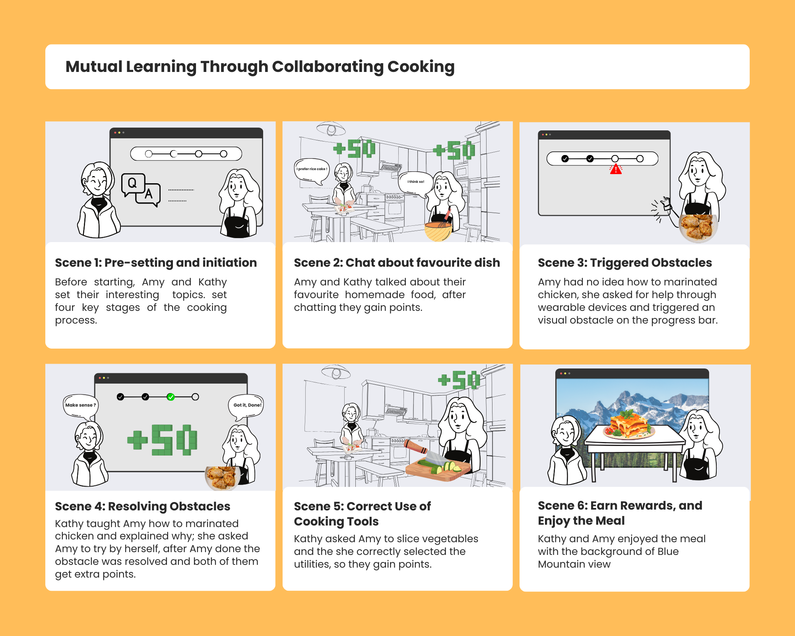
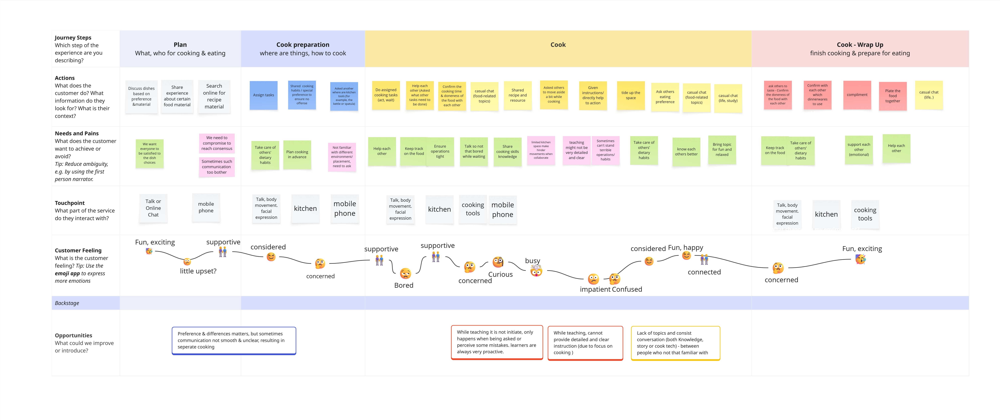
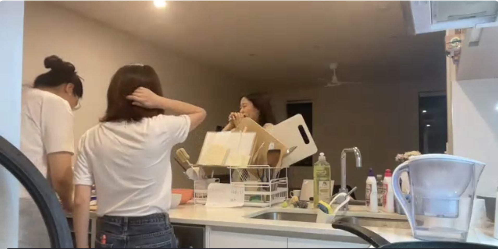

Shall We Cook?
THE BRIEF
"Shall We Cook" is an interactive cooking system for international students in shared kitchens. It uses projection and wrist devices to guide users through real-time, gamified collaborative cooking tasks.
THE INSIGHT
International students often use shared kitchens as everyday social spaces, but collaborative cooking can be challenging due to differences in cooking skills, ingredients, dietary preferences, cultural backgrounds, and language confidence.

Design Opportunity
The innovation of Shall We Cook lies in turning cooking into a shared, interactive learning experience rather than an individual task. By combining projected guidance, wearable feedback, and gamified milestones, the system helps users coordinate cooking steps, communicate preferences, and exchange cultural or family cooking knowledge in a relaxed and playful way.


UX Experience
Users cook together by following projected steps, receiving wrist-device prompts, and completing collaborative tasks. The system helps them coordinate actions, share cooking knowledge, and build social bonds through food.